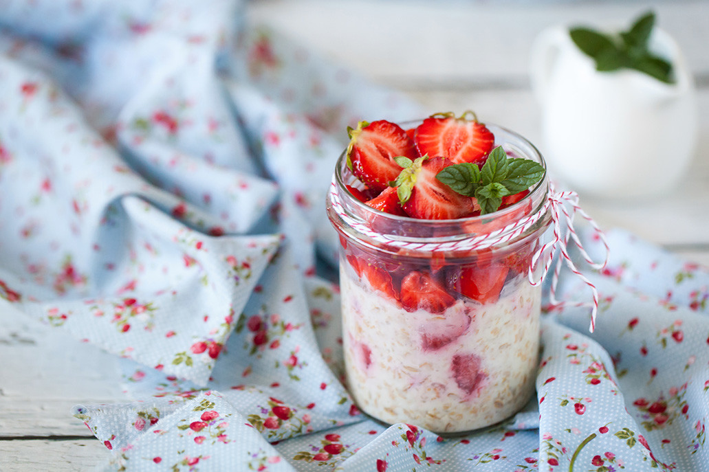

Overnight Oats

Description
Oatmeal is the greatest breakfast of all time. Packed with fiber and other nutrients, this low-glycimic carbohydrate breakfast makes for a great start to your day
The part about overnight oats is its flexibility. The base can be changed with any flavor of yogurt and the world is your oyster when it comes to toppings!
Ingredients:
- Oatmeal: 80 grams
- Yogurt: 120 grams
- Chia seeds: 1 tablespoon
- Cinnamon
- Honey
- Walnuts
- Water or milk product
Steps
- Add all ingrediants except the water into a sealable jar
- Add and stir half a cup of water or milk product
- Continue to add and stir water or milk until a creamy texture is produced
- Seal the jar and place it in the refridgerator for at least 6 hours